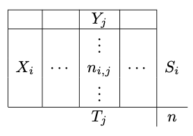

When performing a test we when to test an hypotheses say H0 vs another alternative hypotheses say H1. These hypotheses may be that two population are equal (relatively to a given metric), that a population mean is null, etc.
The values that we observed from our sample (mean of a sample, variance of the sample) are random variables (for a different sample we would have got a different mean or variance).
These variables are randomly distributed but their distribution is unknown. Some hypotheses may be make on the distribution and then a parametric test can be used or no hypotheses is made and then a non parametric test must be used.
Once the test is chosen, we will compare the observed value to the expected value and will extract its p-value which is the percentage of outcomes that would be more extreme than our observed value if the H0 hypotheses was true. This p-value is computed using the complementary cumulative distribution function (inverse of the cdf function which takes as input a random value and outputs a percentage). This p-value will help us decide if we keep or reject the null hypotheses.
Generally the values used to decide to keep or reject the null hypotheses are 0.01, 0.05 and 0.1. They mean that only 1%, 5% or 10% of the outcomes would be more extreme than our observed variable under H0.
If we write our statistic Z then its left tail p-value is \(P(X<Z)\), its right tail p-value is \(P(X>Z)\) and the bilateral p-value is \(P(X \leq -\vert Z \vert \text{ or } X \geq \vert Z \vert)\). See p-value.
If the variance \(\sigma^2\) is known and the population X in normally distributed or the CLT can be applied (ie n>30) then the Z statistic is written as follow:
\[Z=\frac{\bar{X}-\mu}{\sigma}\]If the variance \(\sigma^2\) is unknown but the population X in normally distributed or the CLT can be applied (ie n>30) then the T statistic is written as follow:
\[T=\frac{\bar{X}-\mu}{\frac{S}{\sqrt{n}}}\]Where \(n\) is the sample size.
If the population X in normally distributed then we can test if the sample variance \(S^2\) is equal to a given variance \(\sigma^2\). The Chi-squared statistic is then:
\[\chi^2=\frac{(n-1)S^2}{\sigma^2}\]Let each element of a population X follows a Bernoulli distribution. They take the value 1 with probability p and the value 0 with probability q=1-p. Sample size of the population is n. If \(np \geq 5\) and \(nq \geq 5\) then thanks to the Central Limit Theorem, a normal test can be applied. It Z statistic is :
\[Z=\frac{\widehat{p}-p}{\sqrt{\frac{pq}{n}}}\]The Kolmogorov-Smirnov test is a non parametric test (ie without hypotheses in the data distribution). It is based on the empirical cumulative distribution function. It can be used to test if a sample of data follows a given distribution.
First let’s define the empirical distribution \(F_{n}(x)\) as follow: \(F_{n}(x)={\frac {\text{number of (elements in the sample} \leq x)}{n}}=\frac {1}{n}\sum_{i=1}^{n}1_{[-\infty ,x]}(X_{i})\)
Where:
Then the statistic in the Kolmogorov-Smirnov test is computed as follow:
\[D_n=\underset{x}{\sup}|F_n(x)-F(x)|\]See Shapiro–Wilk test Wikipedia page (but the theory is non trivial).
See A/B testing.
The Fisher test is defined as the ratio of two Chi-2 variables. If X and Y are two normally distributed populations then we can test if their variance are equivalent. The Fisher test is written as follow:
\[F=\frac{S_X^2}{S_Y^2}\]\(S_X^2\) and \(S_Y^2\) follows chi-2 distribution (sum of squared gaussian) thus their fraction follows a Fisher distribution.
Pearson’s chi-squared test is for categorical variables.
We detailed the Pearson’s chi-squared test for two population and two categories in the A/B testing page. We can generalize for \(n_X\) populations and \(n_Y\) outcomes. Note that this test can be seen as an independent test: test the independence between a population and an outcome (for example medical treatment / placebo and cured / not cured).

The population \(i\) has \(S_i\) elements and the outcome \(j\) has \(T_j\) elements.
We can compute the theoretical sizes:
\[C_{ij}=\frac{S_iT_j}{n}\]Under the H0 assumption, \(C_{ij}=n_{ij}\) and the Pearson’s chi-squared statistic is:
\[\chi^2_c=\sum_{i,j}\frac{\left(n_{ij}-C_{ij}\right)^2}{C_{ij}}\]Null correlation test is for continuous variables.
Let X and Y be two normally distributed population with n observable pairs. Let r be the sample correlation coefficient. Let H0 be \(\rho=0\) (no correlation between the two populations).
Then the T statistic follows a Student distribution and is defined as follow:
\[T=\frac{r\sqrt{n-2}}{\sqrt{1-r^2}}\]The degree of liberty of the distribution is \(\nu=n-2\).
Sources may be easily found on Wikipedia or Internet.